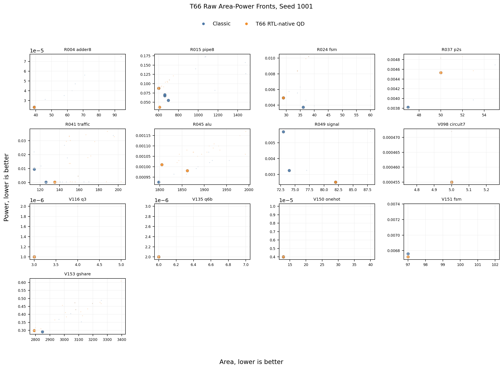
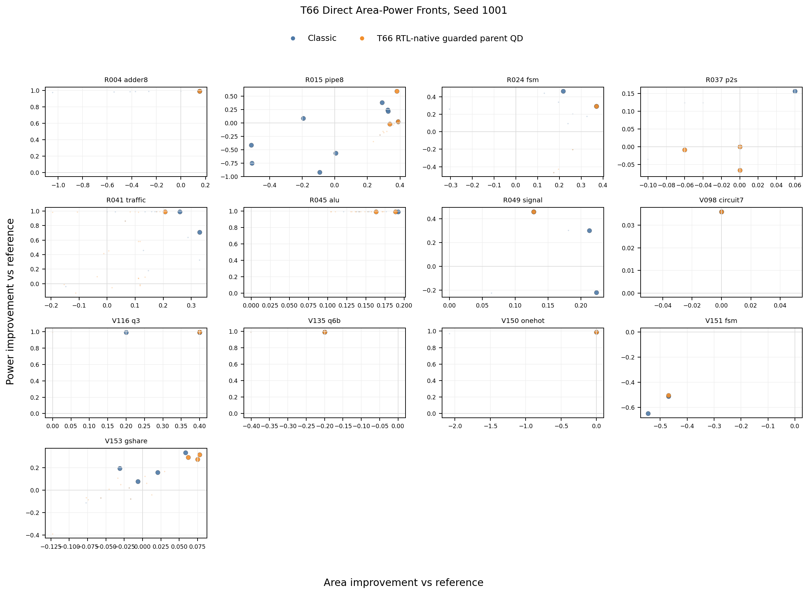
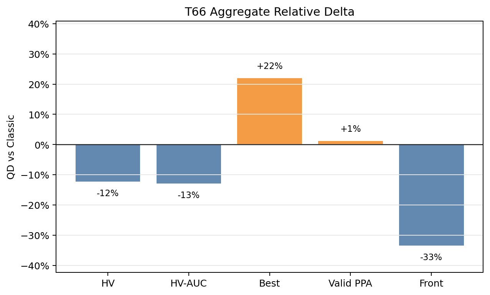
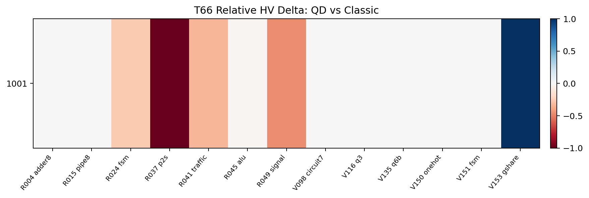
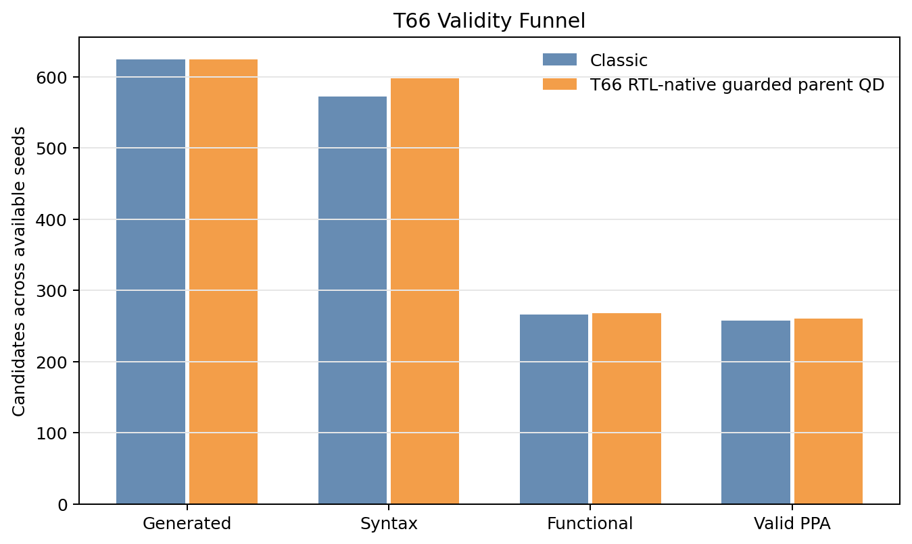
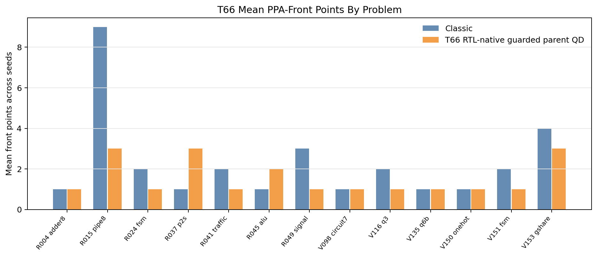
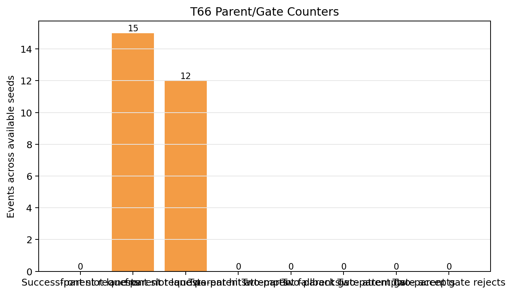

T66 Direct PPA Pareto Supplement
Static reader-facing figures for the 13-problem hard/tuning screen. T66 combines RTL-native state/pipeline archive cells with front-slot parent pressure. The result is diagnostic: yield and best score improve, but classic still wins the aggregate HV, HV-AUC, and PPA-front metrics.
-0.011308Mean HV delta
-0.010577Mean HV-AUC delta
+0.050092Best-score delta
+3Valid PPA delta
-10Front points
+3Unique PPA
+2Reference beating
13/13Headline rows
Raw Area-Power Fronts

Improvement-Vs-Reference Fronts

Aggregate Direction


Validity And Front Coverage


